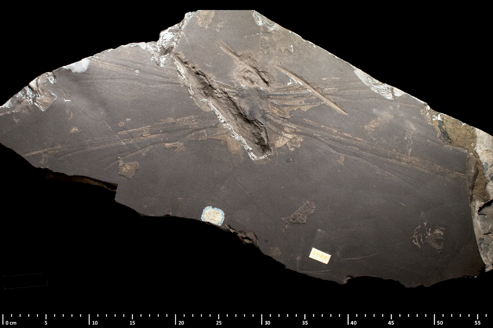
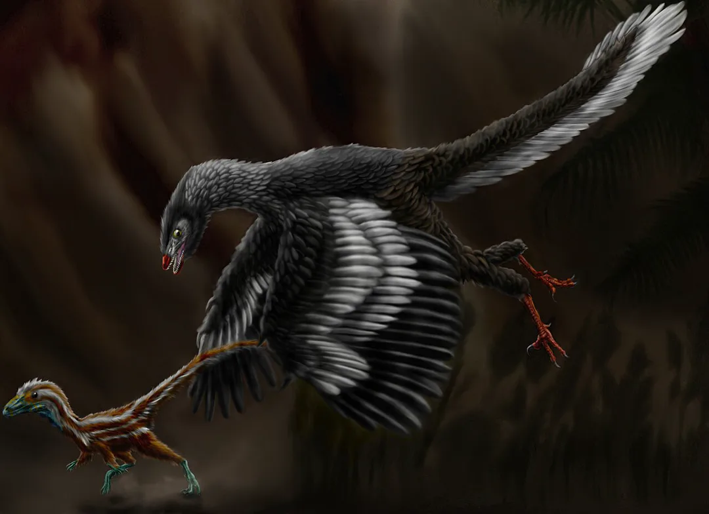
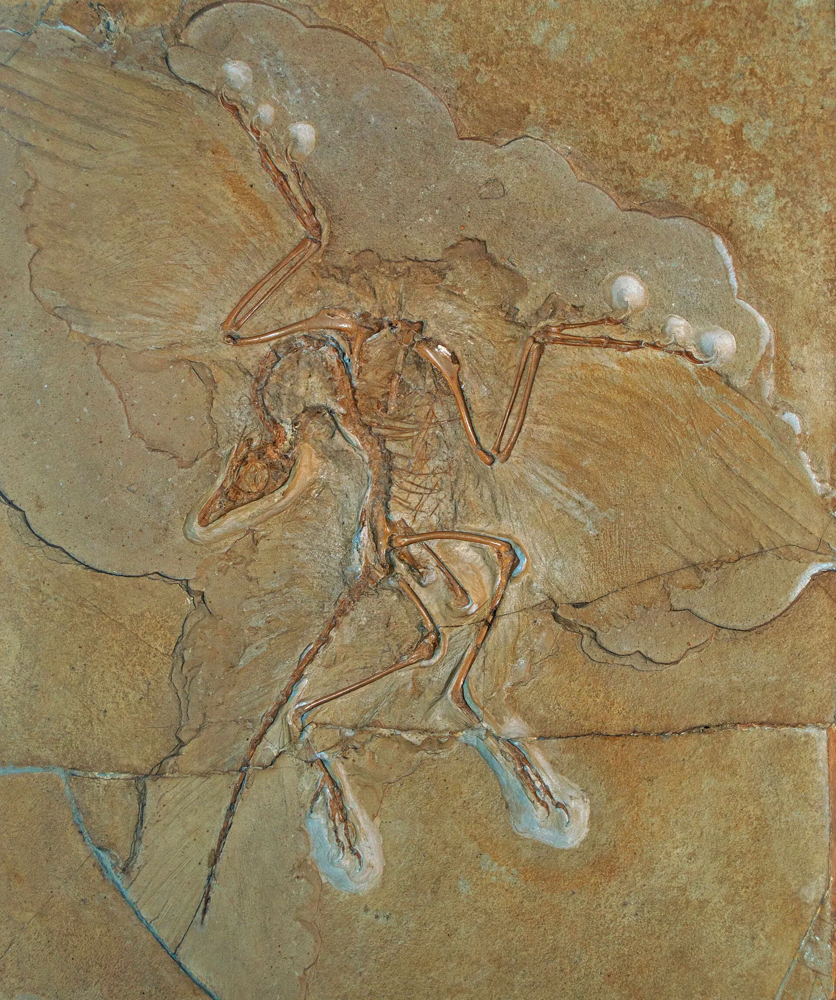
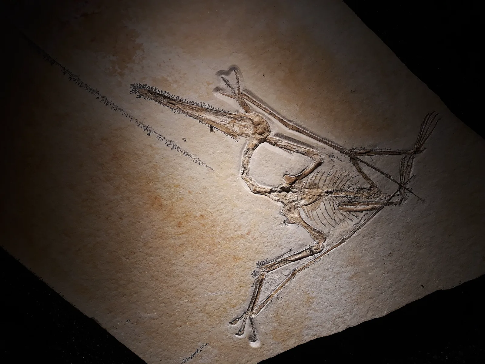
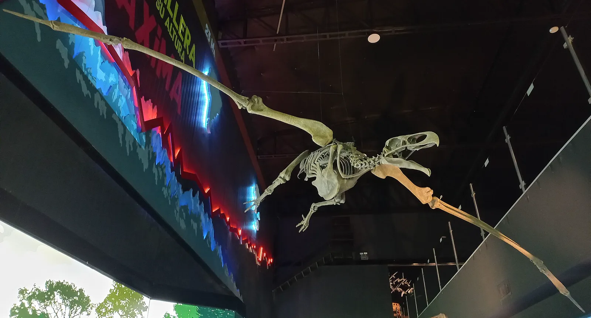
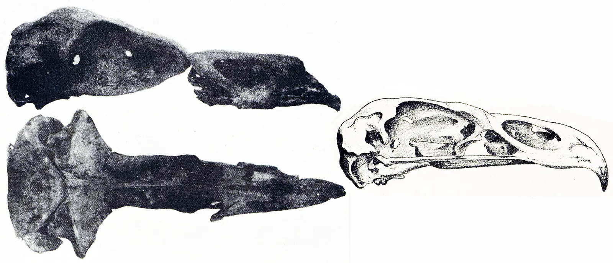

الحياة عبر الزمن
جوّي الحيوانات الموسومة أصلًا بالطيران على خريطة الزمن العميق. كل بطاقة تستخدم جملة ذلك المدخل ومصدره. الصفحة الكاملة لكل واحد ما زالت قادمة.
جمل كل حيوان ما زالت بالإنجليزية، بانتظار المراجعة.
الزمن العميق . فعّلوا هناك شريحة Flying لتروا هذه المجموعة تتحرك.

Meganeura A giant insect from Commentry, France. The Paris museum dates Meganeura monyi to about 300 million years ago, in the Late Carboniferous, and gives the wingspan as 70 cm. The picture is the lectotype, MNHN R51142.
Gaëlle Doitteau & Sandra DAILLIE, CC BY 4.0, via Wikimedia Commons. The original file is 1772 pixels wide. This page serves 1772 pixels wide. صفحة الملف · المصدر: National Museum of Natural History, Paris: Meganeura monyi.


Archaeopteryx A feathered dinosaur from Late Jurassic lagoons in Bavaria, about 150 million years ago.
إعادة بناء. Durbed, CC BY-SA 3.0, via Wikimedia Commons. Artist’s concept. صفحة الملف · أحفورة. Emily Willoughby (emily.a.willoughby@gmail.com), CC BY-SA 4.0, via Wikimedia Commons. The original file is 3926 pixels wide. This page serves 1920 pixels wide, not enlarged. صفحة الملف · المصدر: Bürgermeister-Müller-Museum, Solnhofen. Linked from this site’s coin.

Pterodactylus A pterosaur from the Solnhofen lagoons. The Paleobiology Database places the type of Pterodactylus antiquus in the Tithonian, 149.2 to 143.1 million years ago on this map’s scale. This site’s Solnhofen coin rounds those same lagoons to about 150. The picture is a fossil, not Archaeopteryx.
Dean Falk Schnabel, CC BY-SA 4.0, via Wikimedia Commons. The original file is 4128 pixels wide. This page serves 1920 pixels wide, not enlarged. صفحة الملف · المصدر: Paleobiology Database, taxon 156644, type locality in the Tithonian Solnhofen limestone.

Argentavis Argentavis magnificens, named by Campbell and Tonni, 1980, from the Huayquerian of Argentina. Paleobiology Database occurrences of this species are binned 8 to 5 million years ago. The picture is a skeleton on display in Trelew. It is not identified here as the type specimen.
Rique, CC0, via Wikimedia Commons. The original file is 4624 pixels wide. This page serves 1920 pixels wide, not enlarged. صفحة الملف · المصدر: Campbell and Tonni, 1980. The 8 to 5 million year bins are the Paleobiology Database occurrences, the second link. · المصدر: Paleobiology Database occurrences of Argentavis magnificens.

Haast’s eagle A bird of prey in New Zealand. New Zealand Birds Online says it died out 500 to 600 years ago, around the same time as the moa. The picture is a skull plate from Castle Rocks, Southland, not a life portrait.
Transactions and Proceedings of the Royal Society of New Zealand, Public domain, via Wikimedia Commons. The original file is 2815 pixels wide. This page serves 1920 pixels wide, not enlarged. صفحة الملف · المصدر: New Zealand Birds Online: Haast’s eagle.
ديناصورات · ثدييات · حياة بحرية · الزمن العميق